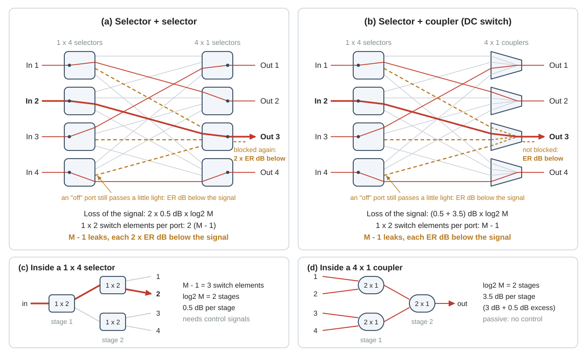
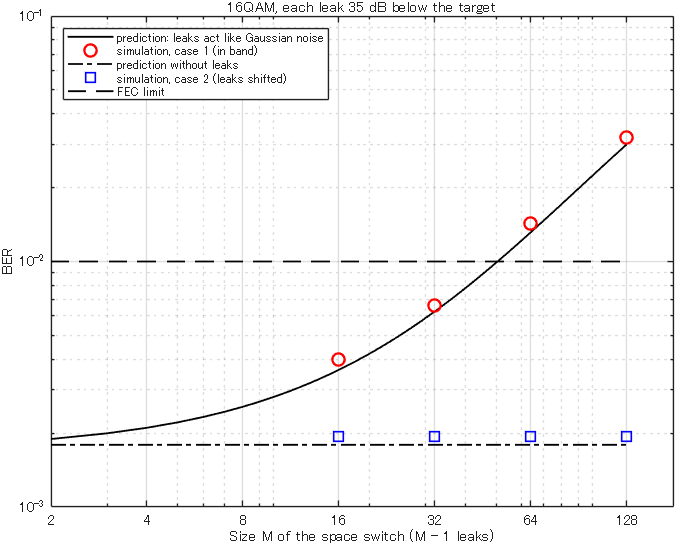

Background
16Space switches and crosstalk
A space switch connects each of its inputs to any of its outputs. This page shows the two ways to build one, what each way costs in loss and in hardware, and how much light leaks through paths that are switched off. It ends with the distinction on which the research rests: a leak on the wavelength of the signal acts like noise, and a leak on another wavelength is removed by the receiver.
matlab/demos/demo16_space_switch_crosstalk.mLibrary: selector_loss, coupler_loss, DCS_loss, TL_QAM, attenuation, calc_signal_power, freqoff1. Why you need this
The three-stage switch of this research has space switches of size \(M \times M\) in its first and third stages. Its port count is \(MN\), and the number of wavelengths \(N\) is limited to about 100 (page 11). A larger switch therefore needs larger space switches, that is, a larger \(M\) (sw_size or dcs_input_port_num in the scripts). Two things get worse when \(M\) grows: the loss of the space switch and the crosstalk inside it. Crosstalk is light of other signals that reaches the receiver together with the signal that the receiver should detect. The introduction names it as one of the two limits of the three-stage switch (page 01, paragraph 3).
The planned paper also aims at a third stage with fewer switch elements (paragraph 5). Such a space switch has much more crosstalk, and whether this crosstalk does harm depends on its wavelength. To judge the proposal you must be able to do two things: calculate how strong the crosstalk of a space switch is, and decide whether it falls into the band of the receiver.
An \(M \times M\) space switch adds \(M-1\) leaks to every signal. With couplers at the outputs, and with all leaks on the wavelength of the signal, the signal-to-crosstalk ratio is \(\mathrm{ER} - 10\log_{10}(M-1)\) dB, where \(\mathrm{ER}\) is the extinction ratio of a selector. More transmitter power does not improve this ratio.
The two types of space switch, the loss rules, the count of switch elements and the extinction ratio of 35 dB come from the paper that this page calls the JLT paper:
- Mitsuya et al., "Three-Stage Optical Circuit Switch Architectures for Intra-Datacenter Networking," J. Lightw. Technol., vol. 43, no. 2, pp. 400-407, 2025 (doi 10.1109/JLT.2024.3465208)
2. Selectors, couplers and two space switches
A space switch is built from two elements. Page 11 introduced them; Fig. 1(c) and Fig. 1(d) show what is inside.
- A selector (\(1 \times M\)) is a switch that connects its single port to one of \(M\) ports. It is a tree of \(1 \times 2\) switch elements with \(\log_2 M\) stages and \(M-1\) elements. The light passes one element in each stage, and each stage costs 0.5 dB. Every element needs a control signal. The JLT paper calls these elements \(1 \times 2\) selectors.
- A coupler (\(M \times 1\)) is passive: it adds the light of all its \(M\) inputs into one output and needs no control. It is a tree of \(2 \times 1\) couplers with \(\log_2 M\) stages. A \(2 \times 1\) coupler loses half of the power (3 dB), and the loss rule of this project adds 0.5 dB of excess loss: each stage costs 3.5 dB.
A selector works in both directions: an \(M \times 1\) selector connects one of \(M\) ports to its single port, with the same loss. If \(M\) is not a power of two, the number of stages is rounded up to \(\lceil \log_2 M \rceil\) (page 12).
Two ways to build an \(M \times M\) space switch
Both switches of Fig. 1 have a \(1 \times M\) selector at every input. Port \(j\) of every input selector is wired to output \(j\) of the switch. The two switches differ in the element that collects these \(M\) wires at an output.
- Selector + selector (Fig. 1(a)): the element at an output is an \(M \times 1\) selector. To connect input \(i\) to output \(j\), input selector \(i\) is set to port \(j\), and output selector \(j\) is set to port \(i\). The three-stage switch uses this type in its first stage. If the third stage uses it too, the JLT paper calls the switch Scheme A1.
- Selector + coupler (Fig. 1(b)): the element at an output is an \(M \times 1\) coupler. Only the input selector is set; the coupler passes everything that arrives. This is the delivery-and-coupling (DC) switch of the two-stage switch. A three-stage switch with this type in its third stage is Scheme A2 of the JLT paper.

A signal passes one element at the input and one element at the output. Its loss is therefore
The hardware is counted in \(1 \times 2\) switch elements per port, as in Table IV of the JLT paper. A selector + selector switch has \(2M\) selectors with \(M-1\) elements each. That is \(2(M-1)\) elements for each of its \(M\) ports. A selector + coupler switch has \(M\) selectors, that is, \(M-1\) elements per port. The numbers of that table follow from these two: \(4(M-1)\) for Scheme A1 (two selector + selector switches on the path), \(3(M-1)\) for Scheme A2 (one switch of each type on the path), and \(M-1\) for the two-stage switch (one selector + coupler switch).
| \(M = 16\) | \(M = 64\) | \(M = 128\) | |
|---|---|---|---|
| Stages, \(\log_2 M\) | 4 | 6 | 7 |
| Loss, selector + selector | 4 dB | 6 dB | 7 dB |
| Loss, selector + coupler | 16 dB | 24 dB | 28 dB |
| Elements per port, selector + selector | 30 | 126 | 254 |
| Elements per port, selector + coupler | 15 | 63 | 127 |
The coupler halves the number of switch elements. Its price is loss: 24 dB in place of 6 dB at \(M = 64\). How much this loss costs depends on where it lies (page 15). In the two-stage switch the DC switch is before the EDFA (the optical amplifier), and its loss limits \(M\) (page 11). In the third stage of the three-stage switch the loss is after the EDFA. The JLT paper states that the loss of the third-stage switch has little effect on the signal-to-noise ratio, and for this reason it allows couplers there (Scheme A2). The coupler has a second price, and the rest of this page is about it: a coupler cannot block a leak.
In the code. Three library functions return these losses in dB. Each takes the number of ports (page 12):
2*selector_loss(64) % selector + selector: 6 dB
selector_loss(64) + coupler_loss(64) % selector + coupler : 24 dB
DCS_loss(64) % the same DC switch : 24 dBstep22_three_stage_one_point uses the first two lines with sw_size for its space switches (variables sw1_loss and sw3_loss). step21_two_stage_one_point calls DCS_loss(dcs_input_port_num). No function counts the switch elements. You count them by hand, and the file matlab/ref_data/jlt2025_three_stage_ref.csv holds the numbers of the JLT paper in its column selectors_per_port.
3. Extinction ratio and leaks
A selector does not switch off completely. A port that is switched off, an off port for short, still passes a small part of the light. The extinction ratio \(\mathrm{ER}\) says, in dB, how much weaker this light is than the light at the selected port. The JLT paper uses 35 dB (sel_ex_ratio = 35 in the three-stage scripts): an off port passes about 1/3200 of the power. The two-stage scripts use 36 dB (dcs_ex_ratio = 36).
Light that reaches an output through an off port is a leak. The signal that you follow is the target signal. Follow the leaks into Out 3 in Fig. 1.
- Selector + coupler. Every other input selector has an off port that is wired to the coupler of Out 3. The coupler adds this light to the target signal. There are \(M-1\) leaks, and each of them has passed one off port: it is \(\mathrm{ER}\) dB weaker than the target signal, if both enter the switch with the same power.
- Selector + selector. The same light arrives at the output selector of Out 3. This selector is set to the port of the target signal, so all its other ports are off ports. A leak has passed two off ports: it is \(2\,\mathrm{ER}\) dB weaker.
The loss of the switch does not enter this comparison, because the target signal and the leaks pass the same number of stages.
Signal-to-crosstalk ratio
Assume that all \(M\) inputs carry signals of the same power \(P\). The leaks carry different data, so they are independent of each other, and their powers add. The signal-to-crosstalk ratio \(\mathrm{SXR}\) is the power of the target signal divided by the power of all leaks together. For the selector + coupler switch it is
and for the selector + selector switch it is
The power \(P\) cancels. A higher transmitter power raises the target signal and the leaks by the same amount. This is the difference from amplifier noise: more power does not help against crosstalk. Each time \(M\) doubles, the SXR falls by about 3 dB.
The SXR is not equal to \(\mathrm{ER}\). One leak is 35 dB below the target signal, but a \(64 \times 64\) switch has 63 of them. Their powers add: 10 log10(63) = 18 dB must be subtracted.
The SNR that the modulation format needs sets the acceptable amount of crosstalk. 16QAM needs an SNR of 13.90 dB at the FEC limit. FEC is forward error correction, and the FEC limit is a BER of \(10^{-2}\): up to this BER, the error correction removes the errors, and the connection works (page 14). If the leaks have the wavelength of the target signal, they act like noise (section 4). The power of the noise and the power of the leaks then add. Dividing this sum by the power of the target signal gives
The three ratios in Eq. (4) are linear numbers, not dB values. \(\mathrm{SNR}_{\mathrm{noise}}\) is the SNR that the noise of the amplifiers alone would give (page 15). Table 2 lists the SXR for \(\mathrm{ER}\) = 35 dB. Its last row is Eq. (4) solved for \(\mathrm{SNR}_{\mathrm{noise}}\) with \(\mathrm{SNR}_{\mathrm{total}}\) = 13.90 dB: the SNR that the amplifier noise alone must at least give if the connection is to work.
| \(M = 16\) | \(M = 32\) | \(M = 64\) | \(M = 128\) | |
|---|---|---|---|---|
| Number of leaks, \(M-1\) | 15 | 31 | 63 | 127 |
| \(10\log_{10}(M-1)\) | 11.76 dB | 14.91 dB | 17.99 dB | 21.04 dB |
| SXR, selector + coupler (Eq. (2)) | 23.24 dB | 20.09 dB | 17.01 dB | 13.96 dB |
| SXR, selector + selector (Eq. (3)) | 58.24 dB | 55.09 dB | 52.01 dB | 48.96 dB |
| Required \(\mathrm{SNR}_{\mathrm{noise}}\), selector + coupler (Eq. (4)) | 14.44 dB | 15.10 dB | 16.82 dB | 32.39 dB |
- With selectors at the outputs the SXR is 35 dB higher. Crosstalk of 49 dB or more below the target signal changes a total SNR of 13.90 dB by less than 0.01 dB: it can be ignored at all four sizes.
- With couplers at the outputs, the crosstalk of a \(64 \times 64\) switch alone limits the SNR to 17.0 dB. The amplifier noise must then be 2.9 dB lower than without crosstalk (16.82 dB in place of 13.90 dB).
- At \(M = 128\) the SXR is almost as low as the limit itself, and the amplifier noise alone would have to give 32.4 dB. The JLT paper lists Scheme A2 as infeasible at this size (12288 ports in its Table V): it would need more than the 5 dBm of transmitter power that the paper allows. The paper does not name the cause. In the given simulation, no transmitter power up to 10 dBm meets the FEC limit at this size.
The value 13.90 dB comes from the formula for Gaussian noise. The receiver of the simulation needs 14.0 dB, so its limit is reached slightly earlier. Both statements about the simulation come from the header of main_three_stage_conventional.m.
In the code. The extinction ratio is the parameter sel_ex_ratio or dcs_ex_ratio. The attenuation of one leak is a variable of its own: sw1_xt_att = 2*sel_ex_ratio for the first stage of step22_three_stage_one_point, and sw3_xt_att for its third stage (section 5). Both step scripts print the SXR of every space switch in their table of SNR contributions. With its default parameters (Scheme A2, \(M = 64\)) step22_three_stage_one_point prints:
crosstalk of the stage-1 switch 52.01
crosstalk of the stage-3 switch 16.94The first number is Eq. (3). The second number is 0.07 dB below Eq. (2), because the script counts two small effects in addition: every leak brings along the noise of its own path, and the equalizer of the receiver raises the leaks slightly (sections 5 and 6 of the script). Page 22 goes through this table.
4. In-band and out-of-band crosstalk
Whether a leak disturbs the target signal depends on its wavelength.
- In-band crosstalk. The leak has the wavelength of the target signal. Its spectrum lies on top of the spectrum of the target signal, so no filter can separate the two. The receiver decides on the sum. Many independent leaks together act like noise of the same power: Eq. (4) assumes this, and the demo checks it.
- Out-of-band crosstalk. The leak is on another wavelength channel, that is, on another of the \(N\) laser frequencies of the switch. On the 50-GHz grid its carrier is at least 50 GHz away. A coherent receiver selects one wavelength with its local oscillator, the laser inside the receiver, and passes a band about as wide as the symbol rate (page 14). For the 32-GBd signal of the three-stage scripts this band reaches from -16 GHz to +16 GHz. A leak on the neighboring channel lies between 34 GHz and 66 GHz: the receiver removes it.
The JLT paper calls these two cases intra-band crosstalk and inter-band crosstalk.
The receive filter of the simulation is an ideal rectangle with the width of the symbol rate (nyquistfilter). It removes a leak on another channel completely. This is an idealization: no real filter is a perfect rectangle. Treat the complete removal as an assumption, and state it when you report a result that depends on it.
Which case occurs
This depends only on the wavelengths of the signals that meet in the space switch. The wavelength rule of the whole switch, the rule that says which wavelength each connection uses, sets these wavelengths.
- First-stage switch, and the DC switch of the two-stage switch. The \(M\) inputs come from \(M\) transmitters. Each transmitter is tuned to the wavelength that its destination requires. The wavelengths can be different, and they can be equal. The given scripts take the worst case: every leak has the wavelength of the target signal.
- Third-stage switch of the conventional three-stage switch. Third-stage switch \(j\) has \(M\) inputs. They come from the \(M\) AWGs of the middle stage, one from output \(j\) of each AWG. An AWG (arrayed-waveguide grating, page 17) separates the wavelength channels: its output \(j\) passes only wavelength channel \(j\). All \(M\) signals have the same wavelength. Every leak is in band. This is not a worst case: it is always so (page 22).
The second point is the reason why crosstalk limits Scheme A2, although the extra loss of its couplers does little harm. The proposal of this research changes which wavelengths meet in a third-stage switch (page 23).
5. How the simulation models crosstalk
The scripts simulate one signal completely: the target signal. Every other signal appears only as a leak. A leak is a separate QAM signal of the same format with its own random data. It is made by a new call of TL_QAM, weakened with attenuation and added to the field of the target signal.
The DC switch of step21_two_stage_one_point (block [3]) is the shortest example. There signal is a matrix with one input signal in each column:
dcs_loss = DCS_loss(dcs_input_port_num);
signal = attenuation(signal, dcs_loss);
for k = 1:dcs_input_port_num
if k ~= target_port
signal(:, k) = attenuation(signal(:, k), dcs_ex_ratio);
end
end
signal = sum(signal, 2); % output port of the DC switch: target + leaksAll inputs get the loss of the switch. Every input except that of the target signal gets dcs_ex_ratio in addition. The sum over the columns is the field at the output port.
The third-stage switch of step22_three_stage_one_point (block [7]) covers both types of space switch:
if stage3_coupler_flag == 1
% Scheme A2: selector + coupler. A coupler cannot block anything.
sw3_loss = selector_loss(sw_size) + coupler_loss(sw_size);
sw3_xt_att = sel_ex_ratio; % a leak is blocked by ONE selector [dB]
else
% Scheme A1: selector + selector, like stage 1.
sw3_loss = 2*selector_loss(sw_size);
sw3_xt_att = 2*sel_ex_ratio; % a leak is blocked by two selectors [dB]
end
Hband = nyquistfilter(datasize*up, 0, Fs, baudrate*(1+rolloff));
sigpw = calc_signal_power(apply_filter(signal, Hband, 1));
xt_power = sigpw + xt_boost; % power of one waveform [dBm]
crosstalk = zeros(datasize*up, 1);
for k = 1:num_xt_wave
[xt, ~, ~] = TL_QAM(datasize, up, Hrcos, xt_power, mod_flag);
crosstalk = crosstalk + xt;
end
signal = signal + attenuation(crosstalk, sw3_xt_att); % target + leaks
signal = attenuation(signal, sw3_loss);sw3_xt_attis the attenuation of one leak: \(\mathrm{ER}\) or \(2\,\mathrm{ER}\), as in section 3.sigpwis the power at the input of the switch, measured inside the signal band:Hbandis a rectangular mask with the width of the signal band, the same mask as the receive filter. Every other input gets the same power, because its signal has passed the same kind of path through another wavelength-routing (WR) switch of the middle stage.- The loop makes the leaks and adds their fields. With the default
xt_wave_max = Infit runssw_size - 1times, andxt_boostis 0 dB. The note onxt_wave_maxin section 1 of the script explains the faster setting. - The last two lines add the leaks first and apply the loss of the switch to the sum, because the loss is the same for the target signal and for the leaks.
Both scripts add every leak at the frequency of the target signal: all crosstalk is in band. To place a leak on another wavelength channel, shift its spectrum with freqoff(x, foff, fsam) before you add it. The inputs are the field x, the frequency offset foff in Hz and the sampling rate fsam in Hz. The header of freqoff.m gives two rules. First, foff must be a multiple of the bin spacing of the FFT, the frequency step of the spectrum (page 13). Second, the shifted signal must stay inside the simulated band of width \(F_s\):
This is the rule of Eq. (3) on page 14. Here \(B\) is the symbol rate (baudrate) and \(\alpha\) is the roll-off factor (rolloff): the signal has the bandwidth \((1+\alpha)B\) (page 13). The sampling rate \(F_s\) is up*baudrate, where up is the oversampling rate, the number of samples per symbol. For \(B\) = 32 GBd, \(\alpha\) = 0 and \(f_{\mathrm{off}}\) = 50 GHz the right side is 66 GHz: \(F_s\) must be at least 132 GHz. The three-stage scripts use up = 2, which gives 64 GHz. This is enough for them, because all their signals are on the wavelength of the target signal. It is not enough for a leak on the neighboring channel, and up = 4 gives only 128 GHz. The demo therefore uses up = 5 (160 GHz). A part of the spectrum that leaves the band on one side comes back on the other side.
6. Run the demo
In MATLAB, run setup_path once, then demo16_space_switch_crosstalk. The script needs a few seconds. All three self-checks must print passed.
The demo models one output of a selector + coupler switch with \(\mathrm{ER}\) = 35 dB. The target signal is a 16QAM signal with 32 GBd. The demo adds white noise that alone gives an SNR of 16 dB. This noise stands for the amplifier noise, and it makes the BER large enough to be counted. Then it adds the \(M-1\) leaks in two ways. In case 1 the leaks have the wavelength of the target signal. In case 2 the same leaks are shifted by 50 GHz to the neighboring channel. The loss of the switch is left out, because it is the same for the target signal and for the leaks.
| Section | What it does | Library functions |
|---|---|---|
| 1. Parameters | 16QAM, baudrate = 32e9, up = 5, sel_ex_ratio = 35, the sizes list_sw_size = [16 32 64 128], SNR_noise = 16, foff = 50e9. The variable sw_xt_att is the attenuation of one leak. | |
| 2. Sampling frequency and filters | Checks Eq. (5) for a roll-off factor of 0 with an assert. Makes the transmit mask Hrcos and the receive filter H. | rcosfilter, nyquistfilter |
| 3. Target signal, noise and the BER without leaks | Makes the target signal and the noise. Receives the two without leaks: BER_ref. | TL_QAM, apply_filter, adequalizet, measure_BER_QAM |
| 4. Leaks, case 1 and case 2 | For every size: adds sw_size - 1 new signals to crosstalk, weakens the sum by sw_xt_att (leak) and measures the SXR (SXR_sim). Then the receiver runs twice: with the leak as it is (case 1), and with the leak shifted by foff (case 2). | TL_QAM, attenuation, calc_signal_power, freqoff |
| 5. Prediction | Eq. (2) (SXR), Eq. (4) (SNR_total) and the BER formula of page 14 for 16QAM in Gaussian noise (BER_gauss). | |
| 6. Table | Prints the numbers that are shown below. | |
| 7. Self-checks | 1: the measured SXR agrees with Eq. (2) within 0.2 dB. 2: the BER of case 1 agrees with the prediction within 0.1 decades (a factor of 1.26). 3: the BER of case 2 is BER_ref, with the same number of bit errors. | |
| 8. Figure | BER versus \(M\): prediction as lines, simulation as markers. |
The script prints:
Simulated band Fs = 160 GHz; a leak shifted by 50 GHz needs 132 GHz
BER without leaks: 1.934e-03 (165 errors in 85336 bits), prediction: 1.791e-03
M leaks SXR [dB] SXR [dB] SNR [dB] BER BER BER
simulated formula total predicted case 1 case 2
16 15 23.23 23.24 15.25 3.62e-03 3.97e-03 1.93e-03
32 31 20.12 20.09 14.57 6.26e-03 6.62e-03 1.93e-03
64 63 17.01 17.01 13.46 1.32e-02 1.43e-02 1.93e-03
128 127 13.93 13.96 11.85 3.00e-02 3.19e-02 1.93e-03
Self-check 1 passed: SXR = sw_xt_att - 10*log10(M-1) within 0.2 dB
Self-check 2 passed: BER of case 1 = prediction within 0.1 decades (simulation/prediction = 1.06 to 1.10)
Self-check 3 passed: leaks 50 GHz away do not change the BERRead the table column by column.
- SXR. The measured ratio agrees with Eq. (2) within about 0.03 dB: the powers of independent leaks add.
- Case 1. The BER rises with \(M\) and follows the prediction. The \(64 \times 64\) switch is above the FEC limit, as Eq. (4) says: noise of 16 dB and an SXR of 17.01 dB give 13.46 dB in total, less than the required 13.90 dB.
- Case 2. The BER is the BER without leaks at every size: 165 bit errors each time. The receive filter has removed the shifted leaks completely.

demo16_space_switch_crosstalk. Solid line: prediction for in-band leaks (Eq. (4) and the BER formula for Gaussian noise). Circles: simulation, case 1. Dash-dotted line: prediction without leaks. Squares: simulation, case 2. Dashed line: FEC limit.The markers lie 6 to 10 percent above the lines, also without leaks (1.934e-03 against 1.791e-03). Two causes are known. The adaptive equalizer of the receiver (page 14) raises the BER by a few percent compared with the formula (notes in adequalizet.m: about 6 percent for 16QAM near a BER of \(10^{-2}\)). And a counted BER has a random error of about \(1/\sqrt{n}\) for \(n\) bit errors: 8 percent for 165 errors.
- All three self-checks print
passed, and your figure looks like Fig. 2. - You can calculate the columns "SXR [dB] formula" and "SNR [dB] total" of the printed table by hand from Eq. (2) and Eq. (4).
- You can explain why the squares stay on one level while the circles rise.
Change one thing at a time, predict the result, then run the script. Set the value back before the next experiment.
- Selector + selector: replace
sw_xt_att = sel_ex_ratio;bysw_xt_att = 2*sel_ex_ratio;. Predict the SXR for \(M = 128\) and the BER of case 1. - Set
foff = 25e9. The channel spacing is now smaller than the symbol rate. Which part of the spectrum of a leak falls into the receive filter? The script prints its table and then stops in self-check 3. Explain why this stop is correct. Then setfoff = 32e9: why does self-check 3 pass again? - Set
up = 4. The script stops in section 2. Why? Whichupdoesfoff = 100e9need?
What you should see
1. The SXR for \(M = 128\) is 70 - 21.04 = 48.96 dB. The BER of case 1 stays between 1.92e-03 and 1.98e-03 at all sizes: it is the BER without leaks, apart from a few bit decisions.
2. A shifted leak lies between 9 GHz and 41 GHz. The receive filter ends at 16 GHz, so 7 GHz of 32 GHz, that is 22 percent of the leak power, stays in band. The BER of case 2 rises to 5.60e-03 for \(M = 128\). Self-check 3 stops with the message leaks outside the receive filter changed the BER, and this is correct: the leaks are not outside the receive filter. With foff = 32e9, the symbol rate, a shifted leak begins at 16 GHz, exactly where the receive filter ends. The two spectra touch but do not overlap, and the BER of case 2 is BER_ref again.
3. Eq. (5) asks for \(F_s\) of at least 132 GHz, and up = 4 gives 128 GHz: the assert stops the script with Fs is too small for foff: use a larger up. For foff = 100e9 Eq. (5) asks for \(F_s\) of at least 2 × (100 + 16) = 232 GHz, that is, up of at least 7.25: use up = 8.
Section 4 of the script models a leak with three tools: a new TL_QAM signal, attenuation, and freqoff together with Eq. (5). The same tools are available for your own simulation in matlab/work/work2_three_stage_proposed.m.
7. Check your understanding
- A space switch has \(M = 32\). What is the loss of the signal, and how many \(1 \times 2\) switch elements per port does the switch need, for each of the two types?
Answer
\(M = 32\) means 5 stages. Selector + selector: 2 × 0.5 × 5 = 5 dB and 2 × 31 = 62 elements per port. Selector + coupler: 4 × 5 = 20 dB and 31 elements per port. In MATLAB:
2*selector_loss(32)andDCS_loss(32). - The DC switch of
step21_two_stage_one_pointhas \(M = 8\) anddcs_ex_ratio = 36. Calculate its SXR. Where does the script print this number?Answer
Eq. (2): 36 - 10 log10(7) = 36 - 8.45 = 27.55 dB. The script prints it in the table of SNR contributions, in the line
crosstalk of the DC switch 27.55. - A selector + coupler switch has \(M = 64\) and \(\mathrm{ER}\) = 35 dB. The amplifier noise alone gives an SNR of 16 dB. What is the total SNR if all leaks are in band? Is the BER of a 16QAM signal below the FEC limit?
Answer
The SXR is 35 - 17.99 = 17.01 dB. Eq. (4) in linear numbers: 0.02512 + 0.01992 = 0.04504, that is 13.46 dB. This is less than the required 13.90 dB, so the BER is above \(10^{-2}\). The demo confirms it: the prediction is 1.32e-02, and the simulation gives 1.43e-02.
- The switch of question 3 is enlarged to \(M = 128\). Which extinction ratio would its selectors need to keep the SXR of question 3?
Answer
The number of leaks rises from 63 to 127, that is by 10 log10(127/63) = 3.04 dB. The selectors would need 38.04 dB. Every doubling of \(M\) costs about 3 dB of extinction ratio.
- Why does a leak pass two off ports in a selector + selector switch, but only one in a selector + coupler switch?
Answer
In both switches the leak leaves its own input selector through an off port. In the selector + selector switch it then meets the output selector, which is set to the port of the target signal: the leak enters through a second off port. A coupler has no off ports. It adds everything that arrives.
- In the conventional three-stage switch, why is every leak in a third-stage switch in band? And why can a higher transmitter power not reduce the effect of these leaks?
Answer
Third-stage switch \(j\) receives output \(j\) of every AWG, and this output passes only wavelength channel \(j\). All its inputs therefore have the wavelength of the target signal. A higher transmitter power raises the target signal and the leaks by the same factor: the power \(P\) cancels in Eq. (2).
An \(M \times M\) space switch adds \(M-1\) leaks to every signal: each is \(\mathrm{ER}\) below the signal with couplers at the outputs and \(2\,\mathrm{ER}\) below with selectors, so the SXR is \(\mathrm{ER} - 10\log_{10}(M-1)\) or \(2\,\mathrm{ER} - 10\log_{10}(M-1)\) dB. A leak counts only if it is in band. On the wavelength of the signal it acts like noise that no transmitter power can overcome; on another wavelength the receiver removes it. Which wavelengths meet in a space switch is decided by the wavelength routing of the middle stage, and that is the subject of page 17.